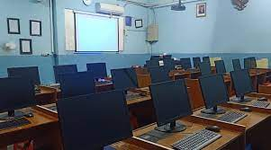

| School Building |
A spacious school building that is comfortable for all school residents. with an area of 2500 m2 guaranteed to provide comfort in doing learning. |
| Hallroom |
a spacious hall that can be used as a meeting or seminar place with a capacity of 3000 seats. equipped with a projector screen and air-conditioned room. |
 Sports Hall Sports Hall |
Sports hall equipped with a grandstand with a capacity of 5000 seats. the area of the field according to the sport being carried out. In addition, it is also equipped with sports equipment that is certified by related sports. often also used as a venue for inter-school leagues. |
 Toilet Toilet |
The toliet here also applies high standards of cleanliness. So, for those of you who want to use this bathroom, you don't have to worry about the cleanliness of this bathroom. This bathroom is also equipped with a sink, a urinal (for men's bathrooms), and a toilet. |
 Canteen Canteen |
The canteen here also controls the selection of food ingredients and the food menu that will be served to students. We also think about the health and safety of students. So, don't worry about the food menu here. we will do our best to provide healthy food for the survival of our students. |
| Language Laboratorium |
we also have a language lab which is equipped with a soundproof room so that students are comfortable in doing learning here. can accommodate 40 seats and is also equipped with state-of-the-art equipment such as headsets from JBL. |
|  Computer Laboratorium |
We also have a language lab equipped with high-spec computers so that students are comfortable in learning here. can accommodate 40 seats and is also equipped with state-of-the-art equipment such as a PC set from the Lenovo All-In-One and a Rexus chair per table |
 Parking Area Parking Area |
Our large parking area is also equipped with a ticket system so that we can track the whereabouts of the vehicle and how long it has been parked. This parking lot can accommodate 500-1000 vehicles. |
| Library |
An Aesthetically designed school library intended for students to be able to do assignments or just read to improve reading literacy. |
 Classroom Classroom |
spacious classroom and functioned as the main study room for students with a capacity of 30 desks per class |